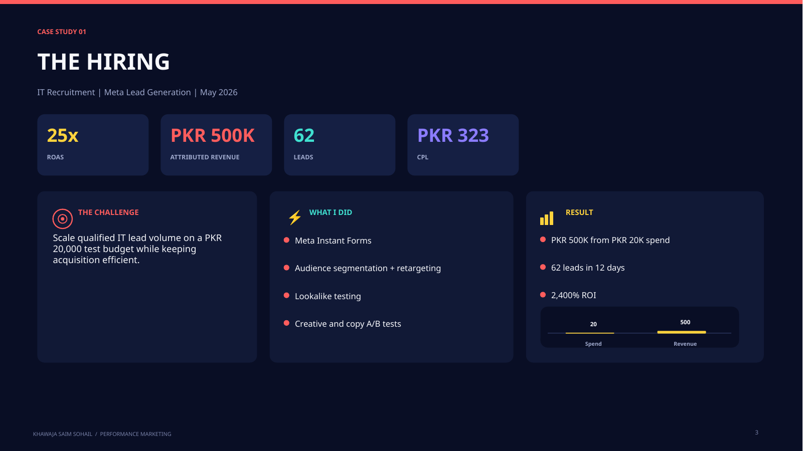
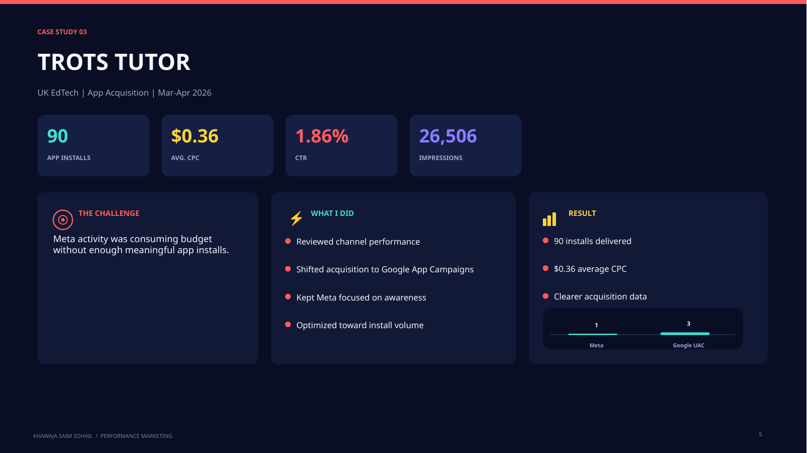
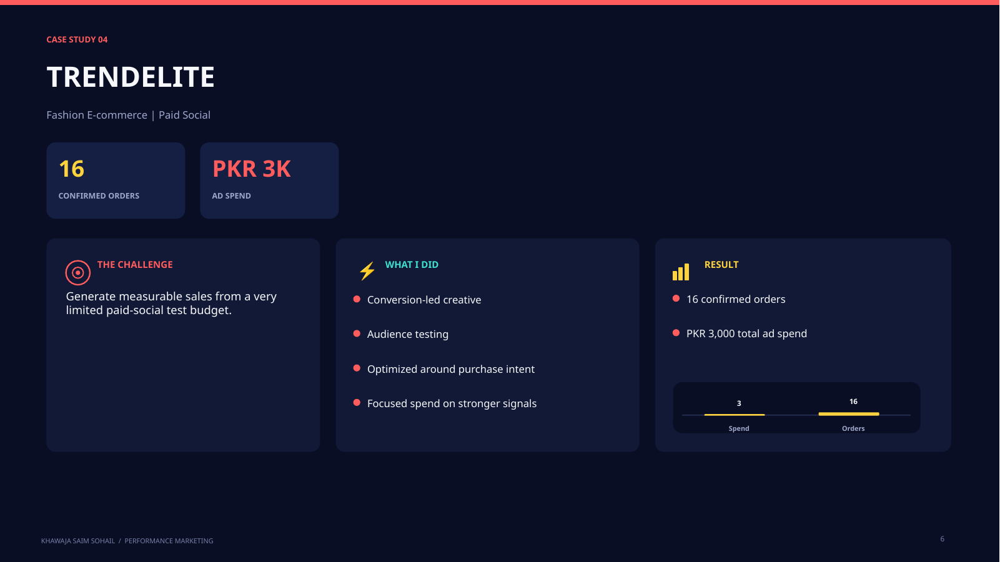

Meta Ads · Recruitment
The Hiring - 25x ROAS
Challenge: Drive qualified recruitment demand efficiently. Approach: Performance-led Meta campaign testing and optimization.
25x ROASPKR 20K spendPKR 500K revenue62 leads
Selected campaign work with the challenge, approach and measurable outcome visible in one place.

Challenge: Drive qualified recruitment demand efficiently. Approach: Performance-led Meta campaign testing and optimization.

Challenge: Generate qualified IT candidates at a lower acquisition cost. Approach: Targeted segments, lookalikes, Instant Forms and creative testing.

Challenge: Meta activity was using budget without enough meaningful installs. Approach: Review channel data and shift acquisition toward Google App Campaigns.

Challenge: Generate measurable sales from a limited paid-social test budget. Approach: Conversion-led creative, audience testing and optimization around purchase intent.
Download the PDF for the full set of campaign pages and working approach.